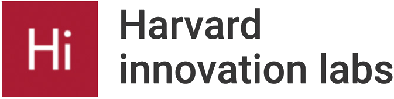
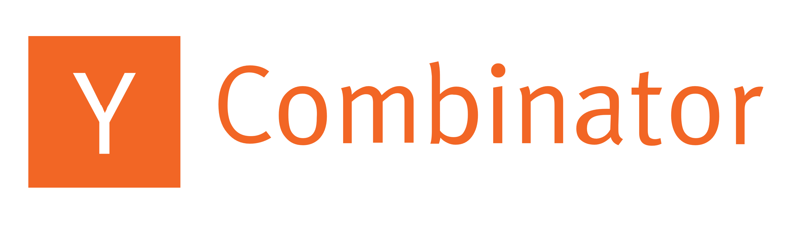
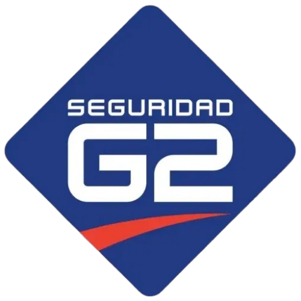

CloselyAI
01 / 06
Quiénes somos
Somos Closely.
Agentes de inteligencia artificial para operaciones de seguridad física.

Miguel Estruch Ferrando
CEO & Cofundador
- McKinsey — Experto en proyectos de seguridad y riesgo
- Harvard University — MBA
- Expertise legal/regulatorio — Mejor estudiante de Derecho en España en 2021

Miguel Castro Arango
CTO & Cofundador
- Treinta (YC) — Escaló la compañía a 10M de usuarios en 23 países
- Universidad de Los Andes — Ingeniería Industrial & Matemática Computacional
- Arthur D. Little — Experto en tecnología e Inteligencia Artificial
Experiencia previa del equipo




Empresas que ya operan con Closely

+0%
más propuestas comerciales vendidas
−0%
reducción en costos de monitoreo
0×
más incidencias detectadas